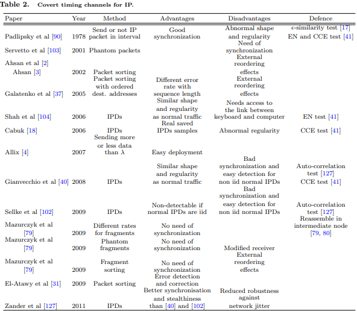

In [114, 115] a novel covert channel is suggested based on the use of the “traceroute” command and IP header
Record route options, which can have length up to 40B. Trabelsi and Jawhar [116] give a novel covert file transfer
protocol (CFTP) based on the IP Record route option. The proposed protocol is based on a novel session-oriented
mechanism that offers TCP-like features embedded inside the IP option field.
Allix [4] gives the example of the following timing covert channel: let the attacker has the control of two machines
A and B, each one having a connection to the same server C. If the machine A sends a packet and then the
machine B sends two packets, this can be interpreted like a 0. If the machine A send two packets and then the
machine B one, this can be interpreted like a 1. Allix suggests a counting covert channel also, with a chosen
arbitrary number λ. During a connection if the number of transferred data is inferior to λ, this codes a binary zero, if the number of transferred data is superior or equal to λ, this codes a binary one.
Graf [43] suggests using of IPv6 Destination Options header for hiding the message which is first TLV encoded.
Lucena et al [66] analysed several covert storage channels in headers of IPv6 and for some of them, the sender
must compute the ICV including the covert data. Manipulation of the IP header can be done in several ways:- by setting false traffic in the 8-bit Traffic class,
- by setting false flow in the 20-bit Flow Label,
- by setting false source address in the 128-bit Source Address,
- by setting an initial Hop Limit value and manipulating the value of subsequent packets. A drawback of this channel is that packets do not necessarily travel the same route, so the number of intermediate hopsmay vary. By modifying n packets, n − 1 bits are send,
- by setting a valid value to add an extra extension header in the 8-bit Next Header field, or by increasingvalue of the Payload Length and append extra data at the end of the packet,
- by modification of the Option Data Length and Option Data fields in the the Hop-by-hop options header.For false router alert, PRBR is 2B, for false padding value PRBR is up to 256B, and for fabrication of oneor more options, PRBR is up to 2038B,
- by 4-bytes Reserved field or by fabricating addresses up to 2048 bytes per packet in Routing header withrouting Type 0
- by using 8-bit and 2-bit Reserved bits, setting false Next Header or inserting entire false fragment in theFragment header. In the last case, authors propose two solutions to avoid this fragment to be includedin the reassembly process: by inserting an invalid value in Identification field in Fragment header thatcauses fragment to be dropped, and by inserting overlapping Fragment Offset value that causes data to beoverwritten during reassembly,
- by manipulating Option Data Length and Option Data fields with fabricating one or more options (PRBRup to 2038B) or setting false padding values (PRBR up to 256B) in the Destination options header,
- by using 2-bytes Reserved field or by creating an entire fake header up to 1022 bytes per packet in theAuthentication header,
- by creating entire fake header up to 1022 bytes per packet or by setting false padding value up to 255 bytesper packet in the ESP header.
